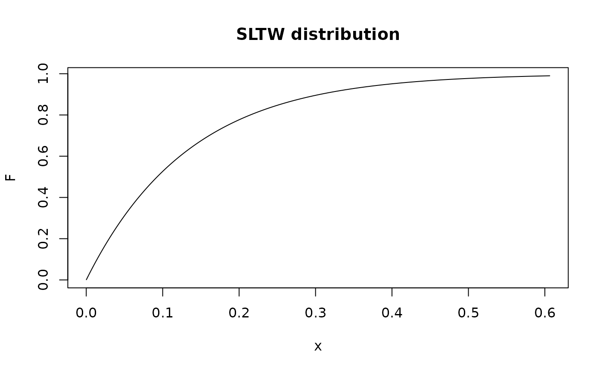

Shifted Left Truncated Weibull (SLTW) distribution
SLTW.RdDensity function, distribution function, quantile function and random generation for the Shifted Left Truncated Weibull distribution.
Usage
dSLTW(x, delta = 1.0, shape = 1.0, scale = 1.0, log = FALSE)
pSLTW(q, delta = 1.0, shape = 1.0, scale = 1.0, lower.tail = FALSE)
qSLTW(p, delta = 1.0, shape = 1.0, scale = 1.0)
rSLTW(n, delta = 1.0, shape = 1.0, scale = 1.0)Arguments
- x, q
-
Vector of quantiles.
- p
-
Vector of probabilities.
- n
Number of observations.
- delta, shape, scale
-
Shift, shape and scale parameters. Vectors of length > 1 are not accepted.
- log
-
Logical; if
TRUE, the log density is returned. - lower.tail
-
Logical; if
TRUE(default), probabilities are \(\textrm{Pr}[X \le x]\), otherwise, \(\textrm{Pr}[X > x]\).
Details
The SLTW distribution function with shape \(\alpha > 0\), scale \(\beta > 0\) and shift \(\delta > 0\) has survival function $$S(y) = \exp\left\{ -\left[ \left( \frac{y + \delta}{\beta} \right)^\alpha - \left( \frac{\delta}{\beta} \right)^\alpha \right] \right\} \qquad (y > 0) $$ This distribution is that of \(Y := X - \delta\) conditional to \(X > \delta\) where \(X\) follows a Weibull distribution with shape \(\alpha\) and scale \(\beta\).
The hazard and mean residual life (MRL) are monotonous functions with the same monotonicity as their Weibull equivalent (with the same shape and scale). The moments or even expectation do not have simple expression.
This distribution is sometimes called power exponential. It is
occasionally used in POT with the shift delta taken as the
threshold as it should be when the distribution for the level \(X\)
(and not for the exceedance \(Y\)) is known to be the standard
Weibull distribution.
Value
dSLTW gives the density
function, pSLTW gives the distribution function, qSLTW
gives the quantile function, and rSLTW generates random
deviates.
See also
Lomax for the Lomax distribution which is a limit case
of SLTW.
Examples
shape <- rexp(1)+1
delta = 10
xl <- qSLTW(c(0.001, 0.99), delta = delta, shape = shape)
x <- seq(from = xl[1], to = xl[2], length.out = 200)
f <- dSLTW(x, delta = delta, shape = shape)
plot(x, f, type = "l", main = "SLTW density")
F <- pSLTW(x, delta = delta, shape = shape)
plot(x, F, type = "l", main = "SLTW distribution")

X <- rSLTW(5000, delta = delta, shape = shape)
## Should be close to the uniform repartition
plot(ecdf(pSLTW(X, delta = delta, shape = shape)))